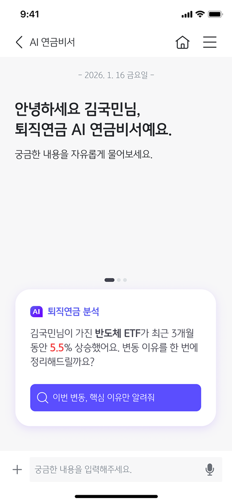
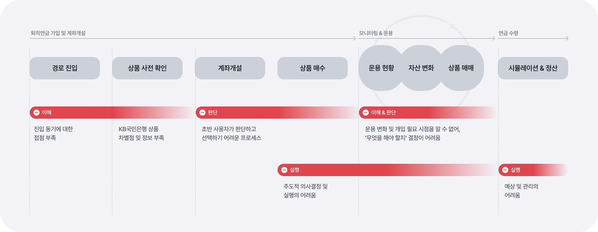
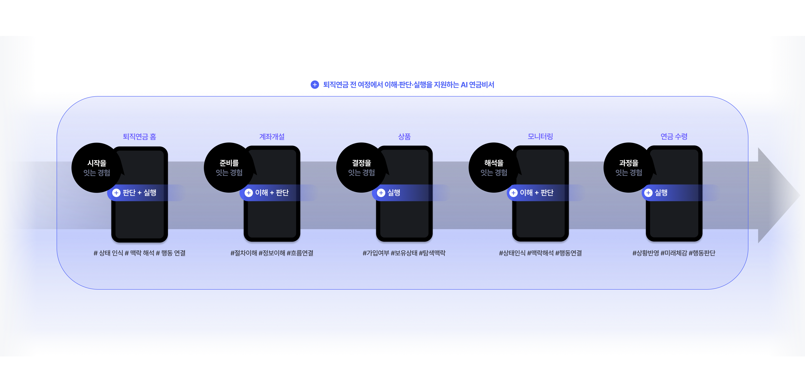
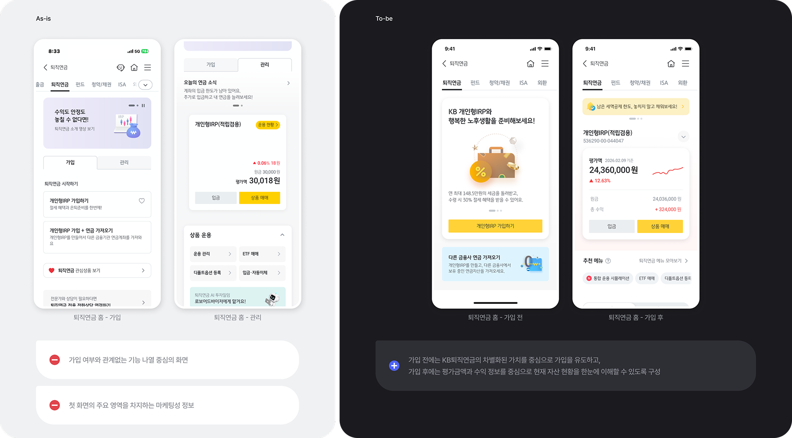
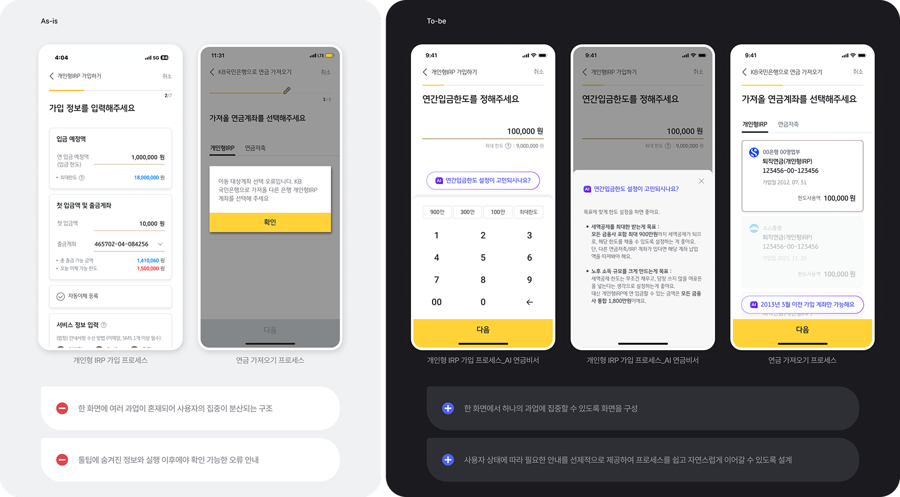
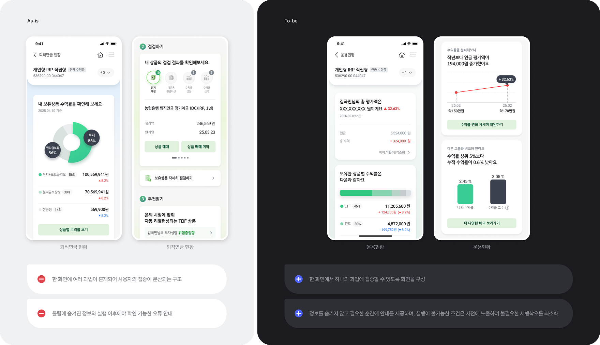
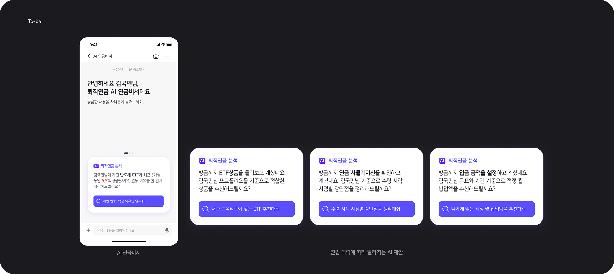

이 포트폴리오는 데스크톱 브라우저에 최적화되어 있습니다.
PC 또는 노트북에서 접속해 주세요.
KB 퇴직연금 비대면 채널 혁신추진 컨설팅

Overview
복잡하고 어려운 퇴직연금 서비스의 사용자 경험을 제고하기 위한 UX 컨설팅을 수행하였습니다. 사용자의 이해 → 판단 → 실행을 돕는 프레임워크를 중심으로 KB스타뱅킹 앱 퇴직연금 서비스의 개선 방향을 제시하였습니다.
Project Goal
퇴직연금은 가입부터 운용, 수령까지 사용자가 스스로 계속해서 의사결정을 내려야 하는 서비스입니다.
이에따라 사용자 전 여정에서 이해→판단→실행이 자연스럽게 이어질 수 있는 '동적 경험 설계'를 목표로 합니다.
50%이상
연금정보의 기본적 '이해'의 어려움을 겪으며
48%이상
그래서 무엇을 해야 하는지 '판단'을 망설였고
58%이상
결정 단계에서는 불안감으로 '실행'을 멈췄다
출처: 금융감독원(2023), 한국연금학회(2021·2022), 자본시장연구원(2021), 은퇴전략연구소(2023)
Discover
현재 KB스타뱅킹 퇴직연금은 '정보의 제공'과 '기능의 구현'에 조금 더 집중되어 있어,
정보를 해석하고 의사결정을 확신하여 행동으로 옮기는 과정은 온전히 사용자의 몫으로 남겨져 있습니다.
은행 4사 퇴직연금 서비스 Gap 분석 결과

UX Strategy
퇴직연금 각각의 메뉴를 고정된 기능이 아닌 사용자의 요구를 수행하는 수단으로 UX정체성을 강화합니다.
이를 위해 기능이 아닌 사용자의 목적을 중심으로 경험을 설계하고, AI 연금비서를 통해 이해·판단·실행 전 과정을 지원합니다.

Wireframe | Home
기존 퇴직연금 홈은 가장 상단에 큰 영역의 마케팅성 배너를 제공하는 등 사용자 맞춤 정보 전달이 제한적이었으며, 가입 완료 이후에도 '가입' 탭이 지속 노출되는 비효율적인 구조였습니다. 이에 따라 가입 및 관리 탭을 통합하여 가입 여부에 따른 최적화된 화면을 제공함으로써 홈의 집중도를 높였습니다.

*공개된 화면은 프로젝트 산출물을 기반으로 재설계하였습니다.
Wireframe | Process
기존 가입, 가져오기 등의 프로세스에서는 한 화면 내 다수의 Task와 툴팁으로 숨겨진 안내로 인해 사용자의 집중도가 분산되며, 진행 과정에서 발생하는 불확실함을 적시에 해소하지 못하는 문제가 있었습니다. 이에 따라 원페이지-원테스크 구조를 적용하여 Task를 분리 노출하였으며, 사용자 상황에 맞춰 적시에 도움을 제공하는 'AI 맞춤 도우미' 영역을 도입하여 사용자의 이해도와 과업 수행 효율을 높일 수 있도록 개선하였습니다.

*공개된 화면은 프로젝트 산출물을 기반으로 재설계하였습니다.
Wireframe | 운용
기존 운용현황은 다양한 정보가 맥락 없이 나열되어 있어 현재 상태를 이해하기 어려웠습니다. 이를 개선하기 위해 브리핑에서 세부 정보로 자연스럽게 이어지는 스토리텔링 구조로 정보를 재구성하였으며, 사용자가 운용현황을 하나의 흐름으로 이해할 수 있도록 설계하였습니다.

*공개된 화면은 프로젝트 산출물을 기반으로 재설계하였습니다.
Wireframe | AI
사용자가 어떤 화면에서 AI 연금비서에 진입했는지에 따라 첫 제안과 추천 질문을 다르게 제공합니다. 이전 화면의 맥락을 반영한 상태로 대화 시작을 유도함으로써 경험의 단절을 줄이고, 사용자가 필요한 순간에 먼저 도움을 주는 AI 비서로 자연스럽게 인식할 수 있도록 설계하였습니다.

*공개된 화면은 프로젝트 산출물을 기반으로 재설계하였습니다.
Retrospective
이번 프로젝트는 '이해–판단–실행'이라는 UX 원칙을 바탕으로, 복잡한 금융 서비스인 퇴직연금을 사용자 관점에서 재구성하는 과정이었습니다. 공급자 중심으로 다양한 기능을 나열하던 기존 구조를 사용자의 목표와 흐름에 맞게 재설계하며, 복잡한 정보를 이해하기 쉽고 자연스럽게 탐색할 수 있는 경험으로 개선한 점이 가장 의미 있었습니다.
또한 AI가 서비스에서 진정한 가치를 제공하기 위해서는 사용자의 맥락을 이해하는 것이 무엇보다 중요하다는 점을 다시 한번 확인했습니다. 사용자가 어떤 목적과 상황에서 서비스를 이용하는지를 고려해 AI의 역할과 개입 방식을 설계할 때 비로소 AI는 단순한 기능이 아닌, 신뢰할 수 있는 사용자 경험이 될 수 있다는 점을 배웠습니다.